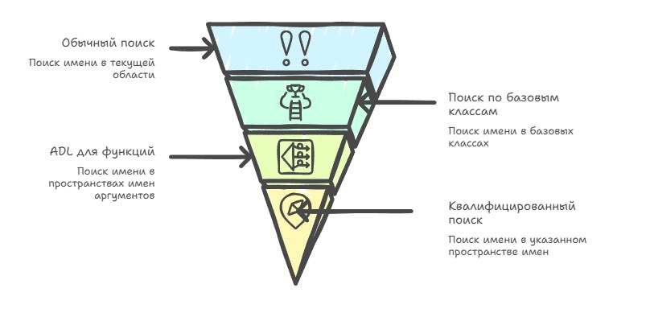

This is a continuation of the topic started in Do names matter to the compiler, and continued in At night all cats are grey, and all using's are alike (in Russian), and if you want the full picture of how the compiler turns text into a program, then without understanding name lookup you won't be able to move on.
Names in the source text are just convenient labels for humans: variables, functions, types. But for the compiler a name is the entry point into a rather complex algorithm that has to unambiguously determine what exactly you meant. And here's where it gets interesting: the same written name in different contexts can mean completely different things, and sometimes nothing at all, depending on where and how it's used.
C++ is especially treacherous here. The language grew over decades, and the name-lookup rules evolved along with it: namespaces, templates, ADL, two-phase lookup were added. All of this not only made the model more complex, it made it non-intuitive in places even for experienced developers — and add to that the fact that different compilers historically implemented these rules differently (each in its own way), and part of those differences still surfaces in code today.
You shouldn't treat the compiler as a black box, even though name lookup really does sometimes look like magic; but if you break it into separate steps, you see that behind this "magic" stands a quite strict (though historically loaded) system of rules. Let me try to tell you about it.
To figure out how name lookup works, you first need to understand the system for describing the names we write in code. At the most basic level we have an identifier, which is essentially just a sequence of letters, digits, and underscores, for example speed, foo, or my_var.
When we use a template, its name is also an identifier, but when we add template arguments, for example my<T, 1>, we get not just a template name but a qualified template name, or template-id.
To unify these notions, the term unqualified-id is introduced. It's a general concept that includes not only ordinary identifiers but also more complex forms of names, such as operators, destructors, or user-defined literals.
And when we add the scope-resolution operator ::, we get a qualified-id, for example std::vector, Foo::~Foo, and so on. It's important to understand that in the expression Foo::bar the name bar is qualified, while Foo itself is a qualifier but is itself an unqualified name.
// Unqualified name
// just an identifier
vector<int> v;
// 'vector' — unqualified name
sort(v.begin(), v.end());
// 'sort' — unqualified name
// Qualified name (qualified-id)
// with the :: operator
std::vector<int> v;
// 'vector' — qualified,
// 'std' — qualifier
std::sort(v.begin(), v.end());
struct Foo {
~Foo() {}
static void bar() {}
};
Foo::bar();
// 'bar' — qualified name
// 'Foo' — qualifier
Foo::~Foo();
//'~Foo' — qualified name
// of the destructor
// template-id — a template name with explicit arguments
std::vector<int> v1; // 'vector<int>' — template-id
std::pair<int, float> p; // 'pair<int, float>' — template-idWhat remains is the key concept for name lookup — the terminal name. This is the last lexical name that the lookup algorithm ultimately tries to find. For example, in the expression obj->f the terminal name is f, and that's exactly what the compiler looks for as the result of all the lookup stages.
// The terminal name - the last name the compiler looks for
obj->f(); // terminal name: 'f'
std::vector<int>::size_type x; // terminal name: 'size_type'
Foo::bar(); // terminal name: 'bar'
ns::Foo::bar();// terminal name: 'bar', qualifiers: 'ns', 'Foo'
// Where it matters: lookup in dependent contexts
template<typename T>
void wrapper(T& obj) {
obj.size();
// 'size' - terminal unqualified name
// the compiler looks for it in type T at instantiation time
T::value_type x;
// 'value_type' - terminal qualified name
// without 'typename' the compiler may not understand it's a type
typename T::value_type y; // this is more correct
}Understanding the terms "identifier", "template-id", "qualified-id" and especially "terminal name" becomes the key to understanding both the standard and compiler behavior in general. The general rule of name lookup in C++ is simple but confusing, because it developed in jumps from standard to standard, while vendors, large companies, and even famous developers contributed their bit.
Until 2017 MSVC didn't support two-phase name lookup (more on this below), and when parsing a template the compiler deferred the lookup of all names until instantiation, whereas the standard required splitting the lookup into two stages already at the template's definition. GCC and Clang followed the standard more strictly; MSVC ignored this requirement for over 20 years.
Andrew Koenig proposed a modification of the name-lookup rules related to namespaces, which entered the standard under the name "Koenig lookup" and is officially fixed in the standard as [basic.lookup.koenig], although in everyday use it's more often called ADL — argument-dependent lookup.
There's an interesting story with ADL, because Koenig didn't invent ADL but only formulated and pushed through a solution to an already existing problem. In the early 1990s the committee was adding namespaces to the draft standard, but it turned out they conflicted with operator overloading. It was necessary to figure out how to make overloaded operators for user types be found automatically, without explicitly specifying the namespace.
The concrete pain point looked like this:
namespace sak {
struct BigNum {
int value;
};
// operator<< defined in namespace sak, next to the type
std::ostream& operator<<(std::ostream& os, const BigNum& n) {
return os << "BigNum(" << n.value << ")";
}
}
int main() {
sak::BigNum n(42);
// ADL: the compiler sees that n has type sak::BigNum,
// looks for operator<< in namespace sak and finds it
std::cout << n << "\n";
// Without ADL you'd have to write something like this:
sak::operator<<(std::cout, n) << "\n";
// Or like this — but then the whole point of operator overloading is lost:
// std::operator<<(std::cout, n);
// won't compile, since there's no such thing in std
}Without ADL the compiler would report an error that it can't find operator<<, because the call doesn't explicitly state that it's in namespace std. The problem was seen even before Koenig, there just was no solution, and Bjarne Stroustrup described the problem in the document P0262 "Name Space Management in C++" (N0262) back in 1993, in whose appendix D (Appendix D: Overloading and Namespaces) you can see what the world looked like before ADL.
// an explicit call kills the whole point of operator overloading
mylib::operator<<(cout, s);
// or drag operator<< into the global namespace via using
using mylib::operator<<;
cout << s; // now it works, but you have to write using everywhereADL is often attributed to Andrew Koenig, although he isn't its inventor, but Koenig published the document N0645 "Reconciling overloaded operators with namespaces" (N0645) in January 1995, where he laid out a concrete solution, and initially his proposal applied only to overloaded operators, not to all functions. Koenig worked at AT&T Bell Labs, where by that time there was already an established practice of similar lookup in the company's own work, and he rather formalized and brought to the committee what was already being used in practice. The alternative was to require explicit qualification everywhere, that is, to write std::operator<<(std::cout, obj) instead of std::cout << obj. That's technically correct but completely kills the point of operator overloading and makes the code "dirty".
But ADL also brought side effects the committee didn't fully foresee, making namespaces less strict and requiring explicit qualification where it otherwise isn't needed, while a dependency on ADL can lead to semantic problems when two libraries expect different behavior from the same unqualified name.
At present the algorithm looks like this: in any scope, ordinary unqualified lookup is performed first, then lookup in base classes if applicable, and for function calls ADL is additionally launched, which extends the set of candidates with names from the arguments' namespaces. If the name is qualified, qualified lookup is performed in the specified namespace or class, without ADL and without ordinary unqualified lookup (we go bottom-up).

In template code, lookup is split into two phases: non-dependent names are looked up at the template's definition, and dependent ones at instantiation, and it's in the second phase that ADL kicks in for dependent names.
GCC
GCC's historical quirk in template code showed up in that the boundaries between the first and second lookup phases were interpreted differently than in Clang and than the standard requires, because of which ADL for dependent names didn't always fire at the right moment. Code that should have compiled might not compile, or conversely compiled where it shouldn't have.
GCC implemented templates before the standard finally formulated these rules, and historically used so-called "lazy parsing", in which the template body wasn't actually fully analyzed on first parse but deferred until instantiation. This meant the first lookup phase essentially wasn't performed at all, and all names, including non-dependent ones, were looked up at instantiation.
The practical consequence was this:
void foo(int) {} // global foo
template<typename T>
void bar(T x) {
foo(x); // dependent name - looked up in phase 2 via ADL, all correct
foo(42); // NON-dependent name - should be looked up in phase 1
// GCC: deferred until instantiation and found foo(int) - ok
// Clang: looked it up in phase 1 and found no matching foo - error
}
namespace myns {
struct MyType {};
void foo(MyType) {}
}
bar(myns::MyType{});
// GCC: compiled without problems
// Clang: error: use of undeclared identifier 'foo'Clang
When two-phase lookup was formalized in C++98, the committee faced a conceptual question: what to do with names from a base class if the base class is itself a template?
If the base Base<T> isn't fully known at the moment Derived<T> is defined and depends on the parameter T, then different specializations may contain completely different sets of members.
The committee decided that dependent base classes don't participate in the first phase of unqualified lookup for the reason that if you allowed lookup in a dependent base in the first phase, then adding a new member to a specialization of the base class could change the meaning of code in the derived class, which violates the principle of template predictability (i.e. it would depend on which arguments it's instantiated with).
// Why the committee forbade lookup in a dependent base in phase 1:
template<typename T>
struct Base {
// the general version has no process method
};
// specialization for int - has process
template<>
struct Base<int> {
void process() {}
};
template<typename T>
struct Derived : Base<T> {
void run() {
process(); // if lookup in a dependent base were allowed:
// for T=int - would find Base<int>::process, compiles
// for T=float - would find nothing and fail
// with the same template code we get different behavior
}
};MSVC
Historically MSVC had non-standard behavior in template name lookup; two-phase name lookup was for a long time not implemented in accordance with the standard, and until VS 2017 with the /permissive- flag dependent names in templates were looked up only at instantiation, not at definition, which gave a different set of candidates compared to GCC and Clang.
This is a real compatibility problem, well known in the C++ community, but deferred parsing, as happens with MSVC, isn't just a choice of name-lookup algorithm. It's a vendor's architectural decision about when the compiler even looks inside the template body, and to redo this behavior means rewriting 80% of the parser.
The MSVC team publicly admitted that the old parser physically didn't allow implementing two-phase lookup, so they had to develop a new one, which took several years and effectively meant replacing one of the central components of Microsoft's compiler.
If you're wondering why MS didn't implement a correct parser right away given the standard existed, this question again takes us into the company's history and, oddly enough, to the roots of a UI library. The entire Windows-application development stack of the 1990s was built on MFC (Microsoft Foundation Classes), and part of the specifics of its implementation and features affected the compiler, adding quirks to it that were in turn actively exploited in MFC. This created mutual reinforcement, preventing MSVC from becoming truly standard-conforming, because it would break MFC, while MFC couldn't become portable because it relied on the non-standard MSVC. But inside Microsoft this coupling was politically protected, because MFC was the foundation of the Windows developer ecosystem.
This is a classic story of technical debt at platform scale, which grew into company scale and started affecting the shipped products, and a once fast and pragmatic decision of 1993 turned into a 25-year architectural constraint that couldn't be fixed without simultaneously rewriting the parser, fixing thousands of Windows SDK components, and fixing MFC, without breaking backward compatibility with the code of hundreds of thousands of developers.
template <typename T>
void call_foo(T x) {
foo(x); // dependent, but MSVC resolved it its own way
}
void foo(int x) { } // declared AFTER the template
int main() {
call_foo(42);
// GCC: error - foo isn't visible at the template's definition point
// MSVC: ok - we find foo at instantiation
}By the standard foo(x) is a dependent name (depends on T), so it should be looked up at instantiation, but only via ADL. But foo(int) isn't found via ADL for int (there's no associated namespace), so GCC correctly gives an error, while MSVC simply looked everything up at instantiation and found it.
What's next…
As I said in the first article, name lookup in C++ is still that part of the language which seems obvious right up until you start digging into the details. Behind the familiar foo, bar, and vector hides not just string matching but a complex and in places historically strange system of rules, compromises, and extensions that appeared as the language developed.
I tried to break down the basic building blocks of this system: identifiers, how unqualified-id and qualified-id are formed from them, where template-id appears, and why it makes sense to single out the "terminal name" as the point that the whole lookup algorithm ultimately comes down to. These concepts by themselves don't answer all questions, but without them it's impossible to understand ADL, two-phase lookup, or template behavior.
I hope after these articles you understand why in C++ there's no single "name-lookup algorithm" that simply walks the steps one after another, but rather several different mechanisms that kick in depending on the form of the name and the context.
If you keep this model in mind as a system of several intersecting mechanisms, then many C++ "oddities" start to look quite "logical." And from this point you can already move on and analyze concrete cases where these rules intersect and start behaving non-obviously. In the next article I'll talk about the most basic mechanism (unqualified lookup) and we'll see how even it alone is capable of creating rather non-trivial situations.
← All articles